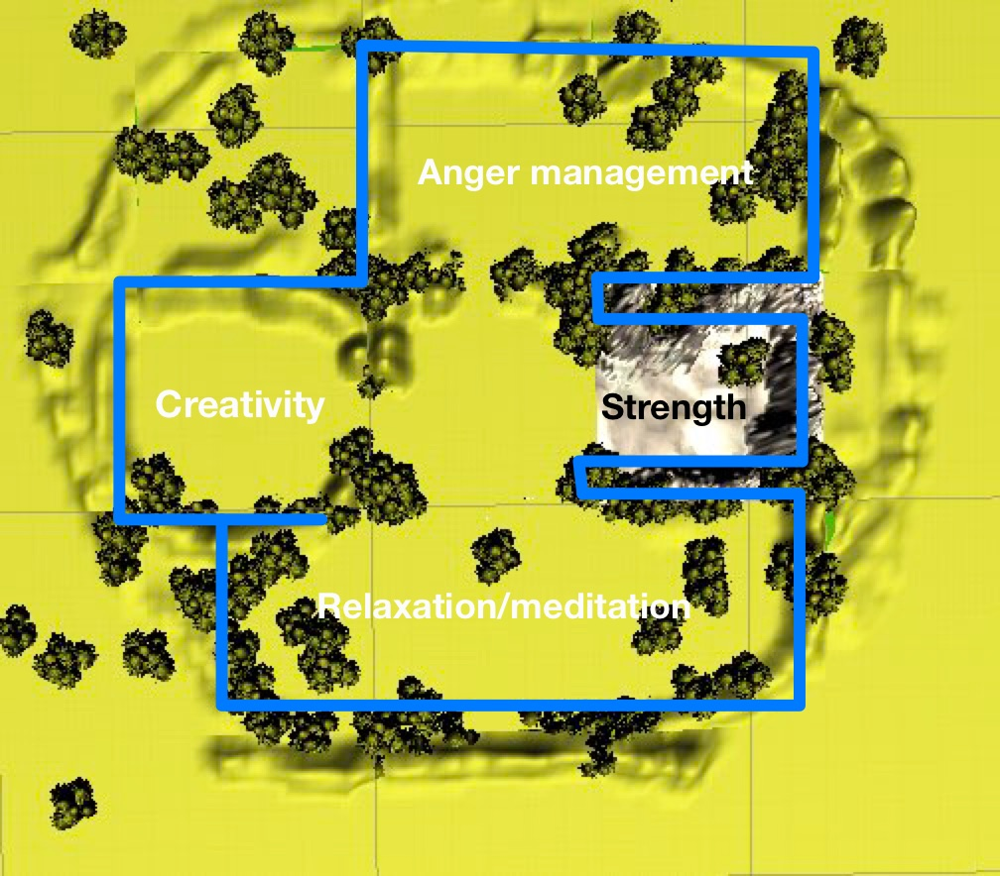

VRt Therapy
Team: Vani Jain, Nadia Jurkovich, Dana AlShehri
March 2021

This project was created with the goal of successfully implementing key principles of VR application design.
The project needed to include elegant wayfinding, travel, selection and manipulation techniques in VR.
The VR platform used was the Oculus Quest 2 and the application was developed from scratch using Unity and C#.

